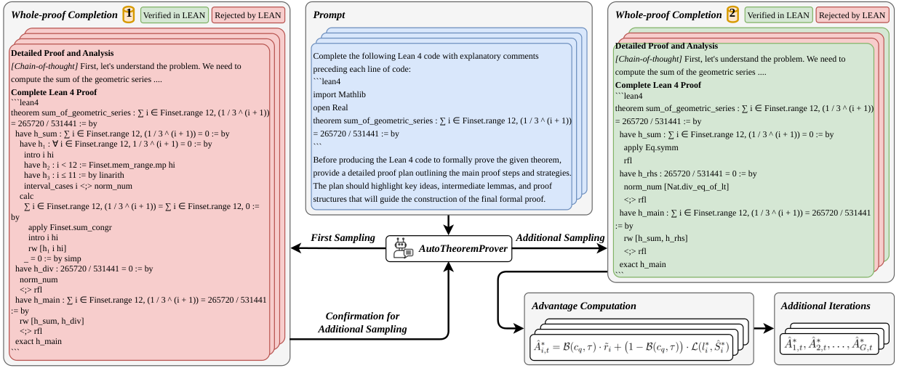

Trains an LLM prover with reinforcement learning using Lean 4 verifier feedback, on Lean datasets, evaluated on MiniF2F, MathOlympiadBench and PutnamBench.
Abstract
Automated Theorem Proving (ATP) is a fundamental AI challenge, requiring machine-verifiable proofs in formal languages like Lean to evaluate reasoning. Reinforcement Learning (RL), especially Group Relative Policy Optimization (GRPO), is a mainstream approach. However, GRPO faces two critical issues in ATP: its relative advantage estimation may conflict with binary verifier feedback under composite rewards, and its static sampling strategy discards batches without valid proofs, causing data waste. Repeated training on mastered problems also wastes computation. To address this, we propose Group Dual-dynamic and Equal-right Advantage Policy Optimization (GDEPO), incorporating three core mechanisms: 1) dynamic additional sampling, resampling ineffective batches until a valid proof is found; 2) equal-right advantage, decoupling the advantage function's sign (correctness) from its magnitude (auxiliary rewards) to ensure stable policy updates while increasing effective computation; and 3) dynamic additional iterations, applying extra gradient steps to initially failed but eventually successful samples to accelerate learning. Experiments on MinF2F-test, MathOlympiadBench, and PutnamBench confirm GDEPO's effectiveness, with ablation studies validating its synergistic components. The method enhances data utilization and optimization efficiency, offering a novel training paradigm for ATP.
Problem
GRPO-based reinforcement learning for Lean theorem proving has three weaknesses. Under composite rewards, its relative advantage can give correct proofs a negative advantage. Batches with no valid proof are discarded, wasting data. Every sample also receives the same number of updates, whatever its learning value.
Approach
GDEPO adds three mechanisms. Dynamic additional sampling resamples a query until the Lean4 verifier accepts a proof or a cap is reached. The equal-right advantage takes its sign from Lean-verified correctness and its magnitude from auxiliary rewards. Dynamic additional iterations apply extra gradient steps to samples that initially failed but eventually succeeded. Goedel-Prover-V2-8B is trained on a hard subset of FineLeanCorpus, kept only where DeepSeek-Prover-V2-671B fails at pass@32.

Fig. 1: LLMs serve as auto-theorem provers by receiving a standardized prompt containing G identical problem instances, generating whole-proof completions, and verifying them through a Lean4 server [ 20 ] . A sample is deemed invalid if all outputs in the group are incorrect. For the same prompt, sampling continues up to a maximum number of attempts until at least one correct proof is obtained. Wh
Results
The resulting GDEPO-Prover-8B reaches 86.2% on MiniF2F-test and solves 65 MathOlympiadBench and 46 PutnamBench problems, against 84.6% / 60 / 25 for the Goedel-Prover-V2-8B baseline. Ablations indicate that each component contributes and that the three combine synergistically.